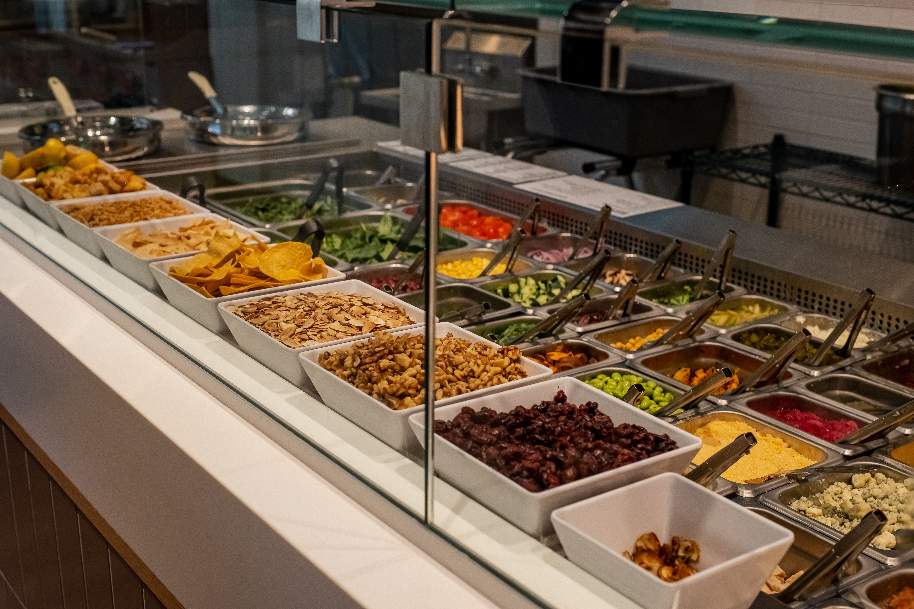
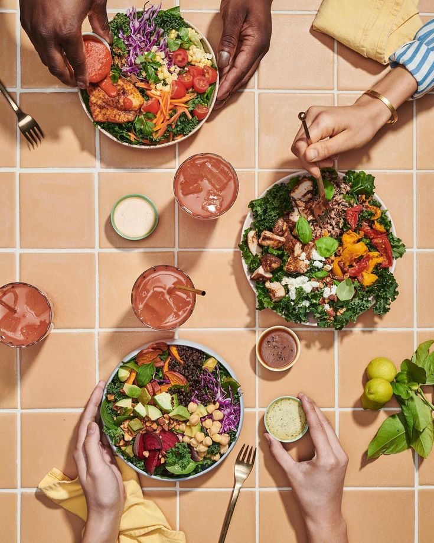
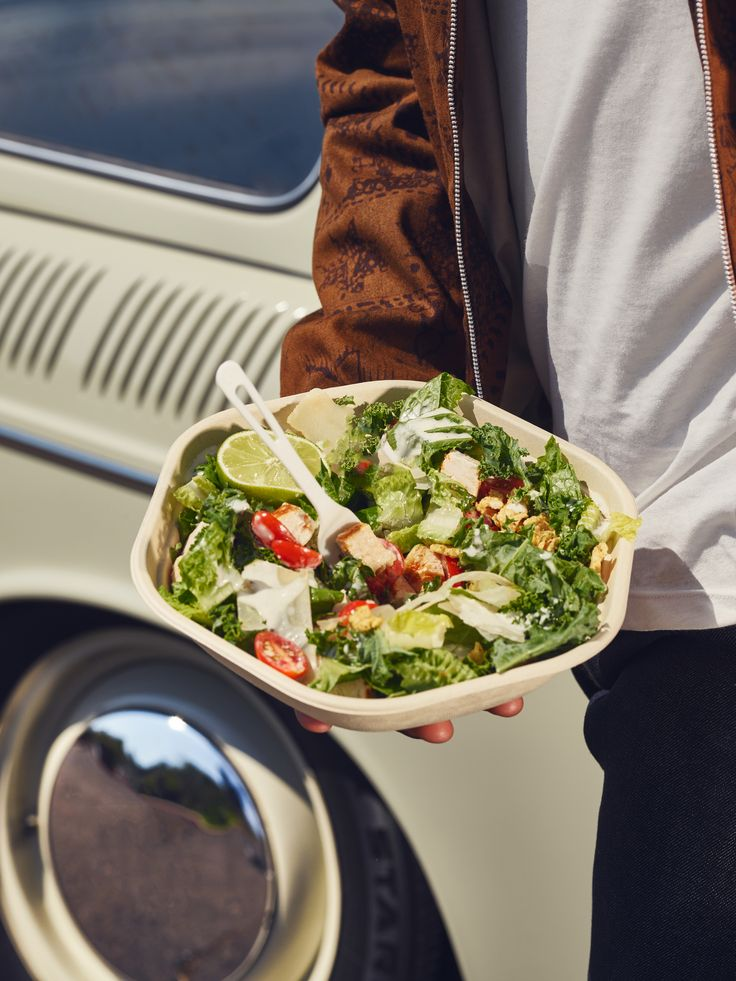
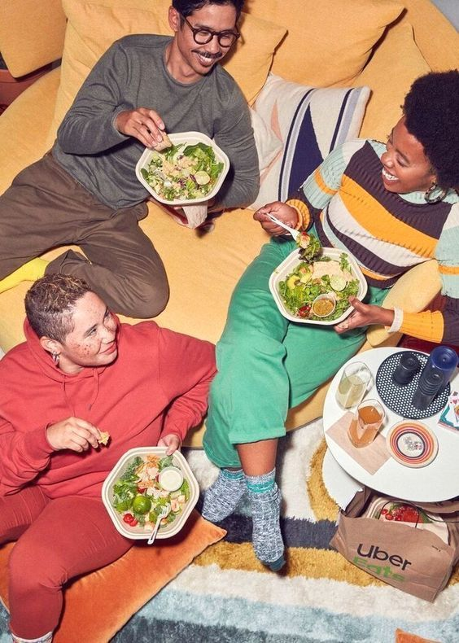
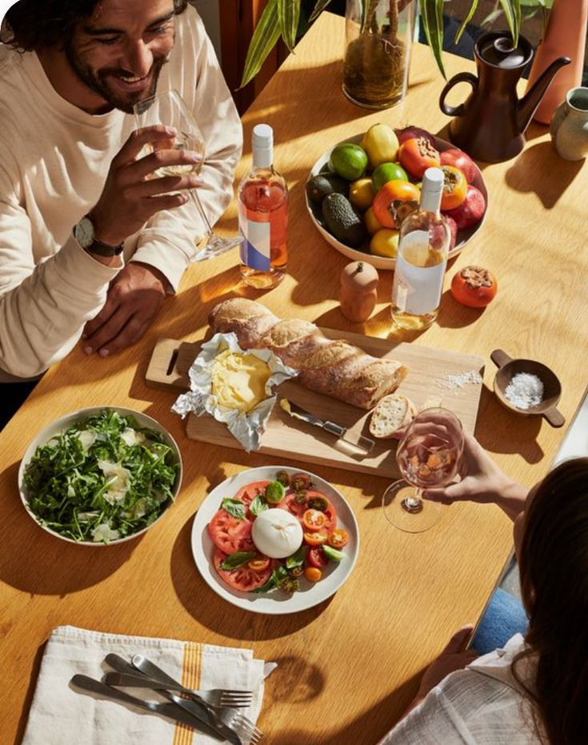
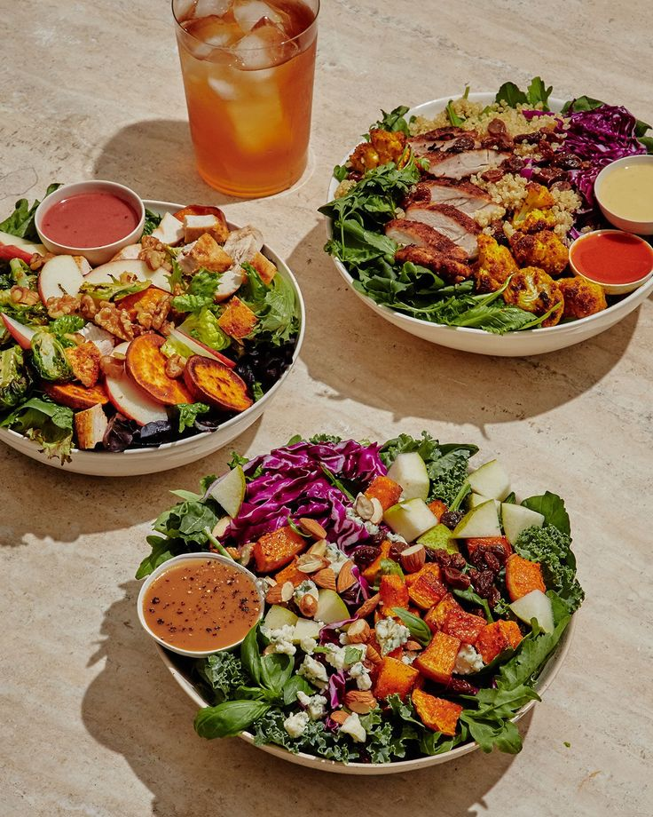
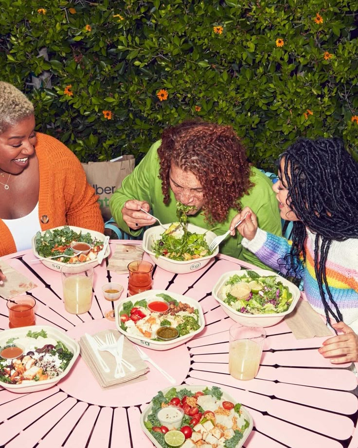
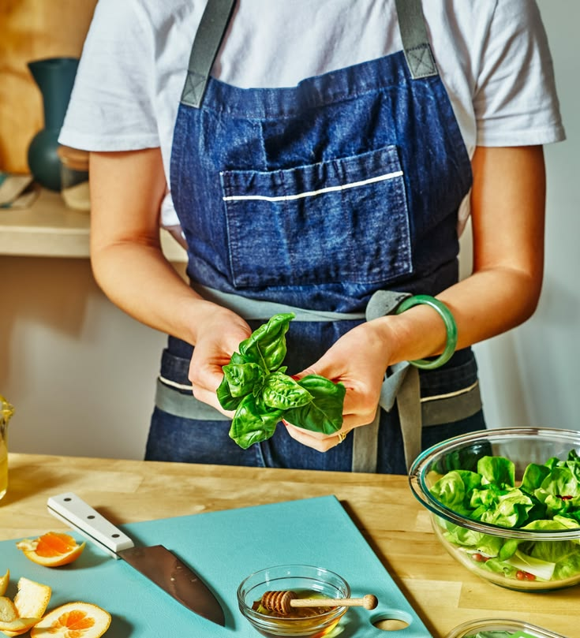
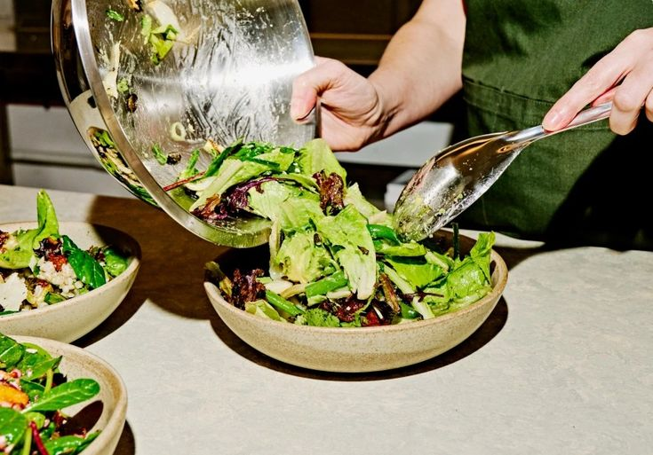

Cambiamos lo que significa comer bien
En Chopp'd creemos que comer bien debería ser algo que disfrutes, no una obligación. Nacimos con la idea de transformar la manera en que las personas comen, creando una experiencia donde lo saludable, lo fresco y lo delicioso van de la mano.Nos apasiona combinar ingredientes frescos, sabores únicos y preparaciones hechas para disfrutar. Desde nuestras ensaladas y wraps hasta nuestras bebidas, cada opción está pensada para ofrecer algo diferente: comida real, llena de sabor y que te haga sentir bien.
Chopp'd. Fresh food, good mood.







Nuestra Historia
Chopp'd nació de una idea sencilla: crear un lugar donde comer fresco, rico y saludable fuera parte de la vida cotidiana. Queríamos ofrecer algo diferente, una alternativa a la comida de siempre, donde los buenos ingredientes, las combinaciones creativas y el sabor fueran los protagonistas. Inspirados por una nueva forma de entender la alimentación, decidimos traer a Ciudad Obregón un concepto moderno, fresco y lleno de personalidad. Un espacio donde cada ensalada, wrap y bebida tuviera algo especial, demostrando que la comida saludable puede ser práctica, divertida, variada y, sobre todo, deliciosa.
Así comenzó Chopp'd: con las ganas de cambiar la manera en que comemos, de explorar nuevos sabores y de acercar una mejor experiencia de comida a nuestra comunidad.
Nuestra Filosofía de Marca
Nuestra filosofía es simple: creemos que cuidarte también puede ser delicioso. Por eso buscamos hacer que comer fresco y balanceado sea fácil, práctico y parte de tu día a día.Más que servir ensaladas, queremos inspirar una forma diferente de comer y vivir. Una donde elegir algo saludable nunca signifique sacrificar el sabor.
